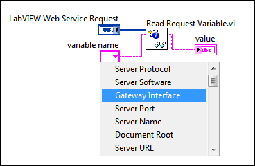

Parent Topic: Developing HTTP Method VIs
HTTP environment variables, or request variables, provide information regarding over 30 aspects of the Web service including server label, remote address, and cache control. Use the variable name control on the Read Request Variable VI to select a specific request variable from a pull-down menu. Use the Read All Request Variables VI to return all request variables as an array for the current HTTP request.
|
Note��For more information about concepts in this topic, refer to the Web services introduction and tutorial. LabVIEW Web services are available only in the LabVIEW Full Development System and the LabVIEW Professional Development System. |
The following figure shows code that uses the Read Request Variable VI to access one of the available request variables that describe characteristics of the HTTP request.
